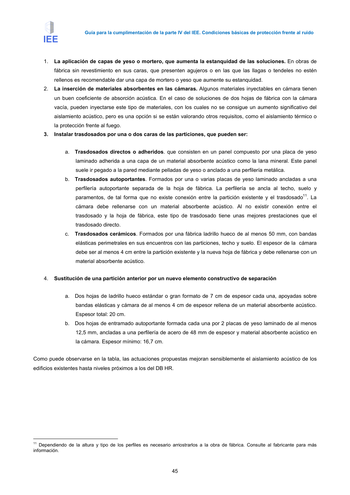

GUIA · Página 55 · versión 2016-11-01
SHA256: 813669d3066c0ff79457d57b80b0512a4fbb248bc5db1f7baf473c369a064738 · página física 55 de 65 · métodos de encabezado
solo si están cotejados.
Formatos: Markdown · JSON de bloques · PDF p. 55 · imagen PNG
Guía para la cumplimentación de la parte IV del IEE. Condiciones básicas de protección frente al ruido
45
1.
La aplicación de capas de yeso o mortero, que aumenta la estanquidad de las soluciones. En obras de
fábrica sin revestimiento en sus caras, que presenten agujeros o en las que las llagas o tendeles no estén
rellenos es recomendable dar una capa de mortero o yeso que aumente su estanquidad.
2.
La inserción de materiales absorbentes en las cámaras. Algunos materiales inyectables en cámara tienen
un buen coeficiente de absorción acústica. En el caso de soluciones de dos hojas de fábrica con la cámara
vacía, pueden inyectarse este tipo de materiales, con los cuales no se consigue un aumento significativo del
aislamiento acústico, pero es una opción si se están valorando otros requisitos, como el aislamiento térmico o
la protección frente al fuego.
3.
Instalar trasdosados por una o dos caras de las particiones, que pueden ser:
a. Trasdosados directos o adheridos. que consisten en un panel compuesto por una placa de yeso
laminado adherida a una capa de un material absorbente acústico como la lana mineral. Este panel
suele ir pegado a la pared mediante pelladas de yeso o anclado a una perfilería metálica.
b. Trasdosados autoportantes. Formados por una o varias placas de yeso laminado ancladas a una
perfilería autoportante separada de la hoja de fábrica. La perfilería se ancla al techo, suelo y
paramentos, de tal forma que no existe conexión entre la partición existente y el trasdosado11. La
cámara debe rellenarse con un material absorbente acústico. Al no existir conexión entre el
trasdosado y la hoja de fábrica, este tipo de trasdosado tiene unas mejores prestaciones que el
trasdosado directo.
c.
Trasdosados cerámicos. Formados por una fábrica ladrillo hueco de al menos 50 mm, con bandas
elásticas perimetrales en sus encuentros con las particiones, techo y suelo. El espesor de la cámara
debe ser al menos 4 cm entre la partición existente y la nueva hoja de fábrica y debe rellenarse con un
material absorbente acústico.
4.
Sustitución de una partición anterior por un nuevo elemento constructivo de separación
a. Dos hojas de ladrillo hueco estándar o gran formato de 7 cm de espesor cada una, apoyadas sobre
bandas elásticas y cámara de al menos 4 cm de espesor rellena de un material absorbente acústico.
Espesor total: 20 cm.
b. Dos hojas de entramado autoportante formada cada una por 2 placas de yeso laminado de al menos
12,5 mm, ancladas a una perfilería de acero de 48 mm de espesor y material absorbente acústico en
la cámara. Espesor mínimo: 16,7 cm.
Como puede observarse en la tabla, las actuaciones propuestas mejoran sensiblemente el aislamiento acústico de los
edificios existentes hasta niveles próximos a los del DB HR.
11 Dependiendo de la altura y tipo de los perfiles es necesario arriostrarlos a la obra de fábrica. Consulte al fabricante para más
información.
